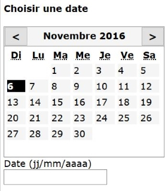

Description

Ce composant permet d'implémenter un calendrier de saisie, analogue au type "date" de HTML5.
Restitution
- Le jour sélectionné doit être vocalisé.
- Lorsque l'utilisateur change de mois, le mois sélectionné est vocalisé.
- Lorsque l'utilisateur change d'année, l'année sélectionnée est vocalisée.
Interactions de base au clavier
Les interactions au clavier sont :
- À la première activation du calendrier de saisie, la touche Majuscule + Tabulation permet d'atteindre la date du jour dans l'ordre de la séquence de tabulation, en avant ou en arrière.
- Les flèches haut et bas permettent de sélectionner le jour équivalent pour la semaine suivante ou précédente. Si la première ou la dernière semaine du mois en cours est atteinte, le processus se poursuit pour le mois suivant ou précédent.
- Les flèches gauche et droite permettent de sélectionner la date suivante ou précédente. Si le premier ou le dernier jour est atteint, le processus se poursuit pour le mois suivant ou précédent.
- Les touches Espace et Entrée permettent de sélectionner la date en cours.
- Si le calendrier de saisie est proposé sous la forme d'une fenêtre, la touche Échap ferme la fenêtre.
Motif de conception : Accordion (WAI-ARIA Authoring Practices 1.1)